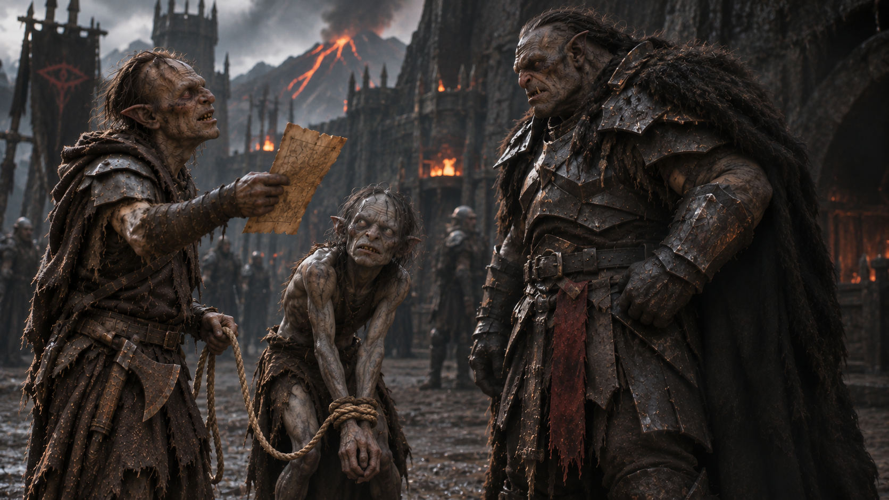

Fin de l’aventure · Mission accomplie
Retour à Barad-dûr
Une mission accomplie. Une double ration bien méritée.
Découvrir votre récompenseVivant, comme demandé
Vous resserrez les nœuds et ignorez les promesses de Gollum. Le retour est long. Votre prisonnier se plaint du soleil, des pierres, de la corde et surtout de votre compagnie. Vous commencez à comprendre pourquoi il voyage seul.
À la Porte Noire, le garde perd son sourire en voyant votre prise. Deux soldats vous escortent jusqu’au capitaine. Vous poussez Gollum devant lui et lui remettez l’ordre de mission.
« Vivant ? Entier ? Hm. Très bien. Les gardes de la Tour prennent le relais. »
Votre récompense : une double ration et une journée sans corvée. Vous vous éloignez avant qu’une autre mission ne lui vienne à l’esprit. Gollum est capturé vivant et vous êtes rentré en un seul morceau. Pour un Orc ordinaire, c’est déjà un exploit.
Demain, vous ferez vraiment semblant de dormir à l’appel.